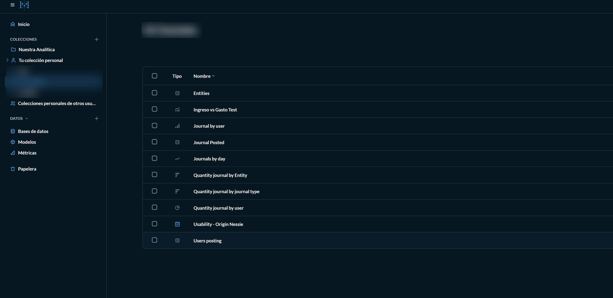
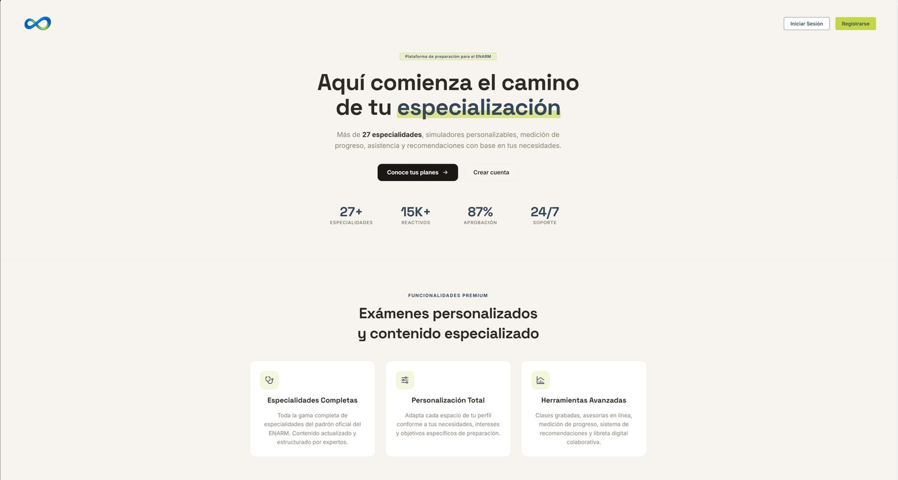
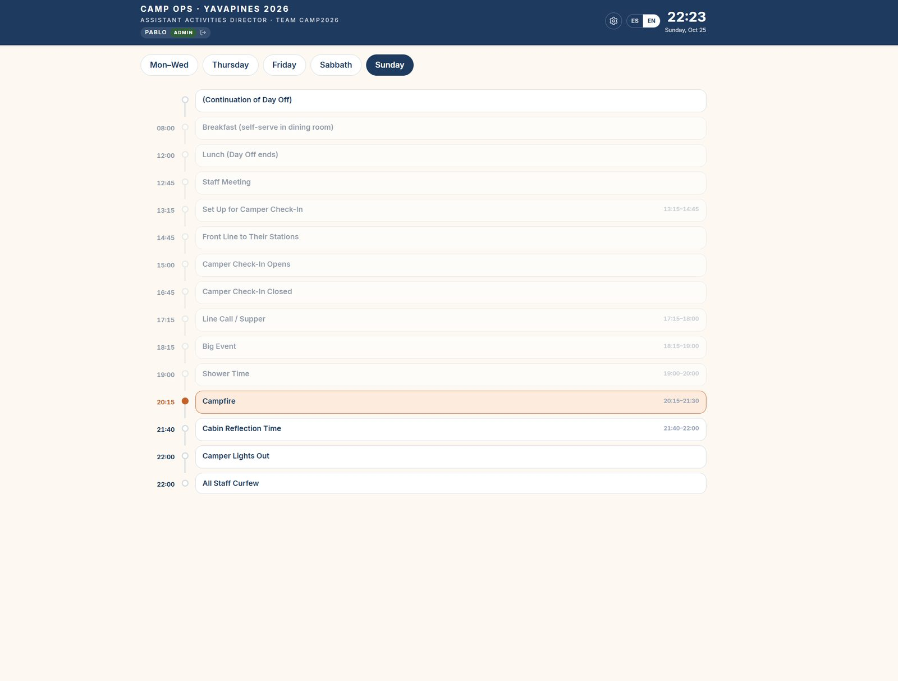

Cada proyecto incluye mi rol, el problema, el stack, evidencia técnica y resultados.
Lakehouse empresarialPrácticas
SunPlus · ago–dic 2026
Rol
Practicante de Data Engineering en el área de Data Lake & BI. Diseñé y configuré el flujo de datos de punta a punta.
Contexto
La información de la empresa vivía en varias bases operativas (SQL Server y PostgreSQL). Cada reporte requería consultas manuales a cada fuente y no existía un lugar único, gobernado y versionado para analizar los datos.
Stack
Dremio
Apache Iceberg
Project Nessie
MinIO (S3)
Metabase
SQL Server
PostgreSQL
Docker
JupyterHub
Arrow Flight
Resultados
9 bases de datos operativas federadas en una sola capa de consulta, sobre un catálogo Nessie con control de versiones por ramas.
Datos organizados en capas bronze, silver y gold, que alimentan los tableros de Metabase del área.
Automatización del refresh de tablas en Dremio, que mantiene los tableros al día sin intervención manual.
Instalación de JupyterHub en Debian con Docker para que el equipo analice y valide datos desde el navegador.
Diagnóstico de conectividad entre servidores y bases en la nube, con la solicitud documentada al equipo de infraestructura.
bronze · datos crudossilver · limpios y tipadosgold · listos para negocio
# Consulta al lakehouse vía Arrow Flight (anonimizado)from pyarrow import flight
client = flight.FlightClient("grpc://<dremio-host>:32010")
token = client.authenticate_basic_token(user, pwd)
opts = flight.FlightCallOptions(headers=[token])
sql = """
SELECT fecha, SUM(importe) AS total
FROM lakehouse.gold.ventas_diarias
GROUP BY fecha ORDER BY fecha DESC
"""
info = client.get_flight_info(
flight.FlightDescriptor.for_command(sql), opts)
df = client.do_get(info.endpoints[0].ticket, opts).read_pandas()
Fragmento representativo del acceso desde notebooks. Credenciales, host y tablas reales sustituidos.
Configuración del espacio de análisis: autenticación con aprobación de admin y límites de recursos por usuario.
img/lakehouse-1.jpg
Dremio: catálogo Nessie en la rama main y 9 fuentes federadas. Nombres ocultos.

img/lakehouse-2.jpg
Metabase: colección de preguntas y tableros que consultan el lakehouse.
El código del lakehouse es propiedad de la empresa. Aquí muestro la arquitectura y fragmentos representativos sin datos, credenciales ni nombres internos.
ENARM360Co-fundadorEn producción
SaaS · 2025–2026
Rol
Co-fundador y desarrollador backend. Diseñé la API REST, la autenticación, los roles y el modelo de datos, y administro el despliegue.
Contexto
Los médicos que presentan el ENARM (Examen Nacional de Aspirantes a Residencias Médicas) necesitan practicar en condiciones parecidas al examen real y medir su avance por especialidad.
Stack
Java
Spring Boot
React
TypeScript
PostgreSQL
Docker
Linux VPS
SSL
Resultados
Plataforma en producción con usuarios que pagan suscripción.
Banco de más de 15,000 reactivos en más de 27 especialidades, con exámenes configurables por tema, número de reactivos, casos clínicos y dificultad.
Despliegue en VPS con Docker, certificados SSL y respaldos de base de datos.
Control de acceso por roles para estudiantes y administradores de contenido.

img/enarm-1.jpg
Página principal de la plataforma.
img/enarm-2.jpg
"Arma tu examen": el usuario elige especialidades y la API arma el examen desde el banco de reactivos.
Assistant Activities Director y desarrollador único del sistema, desde el diseño hasta la puesta en uso.
Contexto
El equipo del campamento coordinaba actividades, horarios y personal con papel y mensajes sueltos. Cualquier cambio de último minuto tardaba en llegar a todos.
Stack
TypeScript
React
Sincronización por código de equipo
Bilingüe ES / EN
Resultados
Dashboard de operaciones adoptado por el staff del campamento durante la temporada.
Checklist de apertura diaria para 20 áreas de actividad, con módulos de tareas, cronograma, capacitación, inventario y registro.
Sincronización entre dispositivos con un código de equipo, sin cuentas individuales.
Interfaz bilingüe para un staff internacional.
img/campops-1.jpg
Inicio: actividad en curso, la siguiente y el estado de apertura de cada área.

img/campops-2.jpg
Cronograma del día con la actividad actual resaltada.
Autor del instrumento de evaluación y del análisis estadístico.
Contexto
Para digitalizar tickets de compra mexicanos había que elegir un motor de OCR, pero no existía una comparación rigurosa sobre este tipo de documento (papel térmico, formatos variados, español).
Stack
Python
Jupyter
Tesseract
EasyOCR
Donut
Friedman · Nemenyi
Cliff's delta
Bootstrap BCa
Resultados
Comparación estadística de tres motores de OCR con pruebas no paramétricas y tamaño de efecto.
Intervalos de confianza por bootstrap BCa para reportar diferencias con rigor.
Presentado en ExpoFITEC 2026; código abierto bajo licencia MIT.